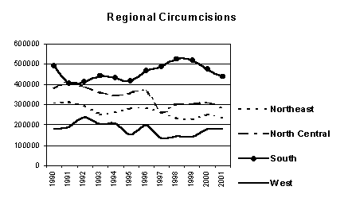
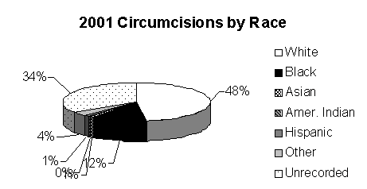

THE CIRCUMCISION REFERENCE LIBRARY
Normal versus Circumcised: U.S. Neonatal
Male Genital Ratio
Interest in the genital integrity issue continues to grow and trustworthy statistics are necessary for an informed debate. The American Academy of Pediatrics complained that statistics being cited are outdated and inaccurate.1 The goal of this paper is to provide recent, accurate and consistent statistics for that discussion. This white paper addresses United States neonatal male circumcisions performed in hospitals.
Source Data: According to the U.S. Census Bureau the most accurate figures for live births is the National Center for Health Statistics (NCHS).2 Live births and male births from 1990-2001 are from the annual NCHS reports including the recent Births: Final Data for 2000 (100% samplings). The NCHS tracks the sex ratio; in recent years it has been 1047 males for every 1000 females born live, or 51.15%.3 This figure has changed little in the past 50 years and is used to calculate male births for years 1990-1997. The number of circumcisions is from health care analysts Solucient who compiled an Inpatient View report (33% samplings) on annual male4 neonate5 circumcisions6 performed in hospitals between 1990 and 2001.
The only known historical compilation of circumcision rates is in Edward Wallerstein’s Circumcision: An American Health Fallacy.7 His statistics are estimates for the years 1870 (the year circumcision was introduced to the United States8) through 1979. In 1979 popularity of circumcision reached a record high in the United States at 85%. Since then the rate has been decreasing. In comparison, the United Kingdom’s circumcision rate is 0.41% for one-year-olds.9
|
Year |
Circumcisions |
% Change |
Live Births |
Male Births |
% Intact |
% Circumcised |
|
2001 |
1,137,654 |
-6.3% |
4,040,121 |
2066522* |
44.9% |
55.1% |
|
2000 |
1,214,312 |
1.9% |
4,058,814 |
2076969 |
41.5% |
58.5% |
|
1999 |
1,191,733 |
-1.1% |
N/A |
2,026,854 |
41.2% |
58.8% |
|
1998 |
1,204,431 |
+5.0% |
N/A |
2,106,205 |
42.8% |
57.2% |
|
1997 |
1,146,839 |
-12.9% |
3,880,894 |
1,985,077 |
42.2% |
57.8% |
|
1996 |
1,317,422 |
+9.5% |
3,891,494 |
1,990,499 |
33.8% |
66.2% |
|
1995 |
1,203,223 |
-3.0% |
3,899,589 |
1,994,640 |
39.7% |
60.3% |
|
1994 |
1,240,572 |
-1.3% |
3,952,767 |
2,021,840 |
38.6% |
61.4% |
|
1993 |
1,257,461 |
-5.8% |
4,000,240 |
2,046,123 |
38.5% |
61.5% |
|
1992 |
1,334,742 |
+0.9% |
4,065,014 |
2,079,255 |
35.8% |
64.2% |
|
1991 |
1,323,189 |
-2.6% |
4,110,907 |
2,102,729 |
37.1% |
62.9% |
|
1990 |
1,358,218 |
N/A |
4,158,212 |
2,126,925 |
36.1% |
63.9% |
The intact rate for 2001 is 44.9%.10 The last time the rate was this high was around 1930, 64 years ago. In 1979 an estimated 15% of boys retained their normal penis.11 The intact rate has increased almost three-fold since then. The number of circumcisions in 2001 decreased 6.3% from the previous year.
Neonatal circumcisions account for 99.3% of U.S. circumcisions. It is the most often performed surgery in the U.S.A.12 Hospital circumcisions account for an estimated 99% of U.S. circumcisions.13

Circumcision in the neonatal period is contraindicated.14 The American Academy of Pediatricians concluded: “There is no absolute medical indication for routine circumcision of the newborn.” 15 The American Medical Association concurs.16
There are conflicting reports of the true cost of neonatal circumcisions. Medicaid paid at least $35 million for circumcision in 1999.17 The AAP estimates that circumcision costs $150-270 million annually.18 The additional cost of complications and extra hospital stay (averages ½ day) has not been estimated.
Deaths from circumcision and related causes are estimated at 229 per year.19
The number of circumcisions varies by region.20 Over the past ten years numbers in the Northeast and North Central regions have dropped while those in the South region have risen, while circumcisions in the West have remained about the same.
Racial make-up of patients changed over the past ten years. The number of circumcisions to White infants is down 38%. Black circumcisions are down 34%. Asian circumcisions are up 30%. American Indian circumcisions are up 263% and Hispanic circumcisions are down 21%.21
No female circumcision has been performed in U.S. hospitals since 1991 when 8 surgeries were performed. It is illegal to circumcise females in the U.S. except for diagnosed medical conditions.22
This report will be updated annually as data becomes available. Dan Bollinger is an independent men’s studies researcher and instructor for men’s workshops. He resides in West Lafayette, Indiana. danbollinger@insightbb.com
http://www.cirp.org/library/statistics/bollinger2003/